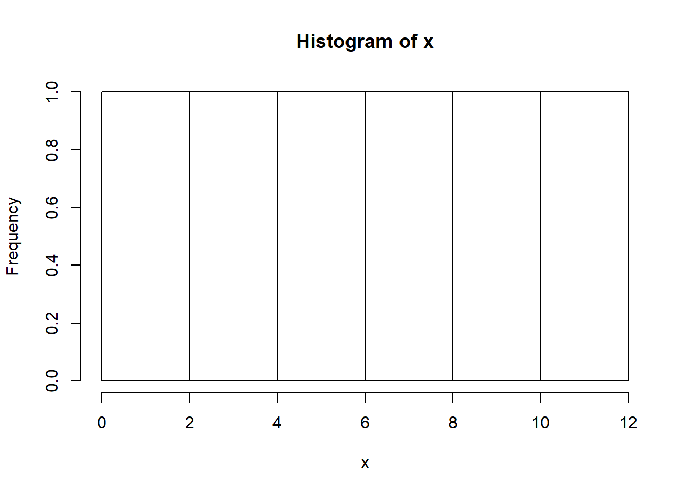
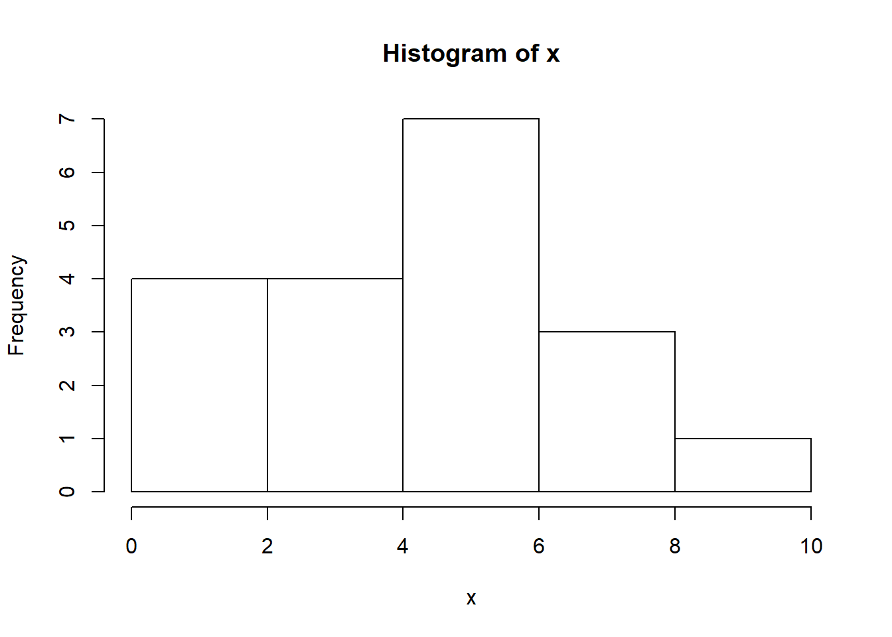
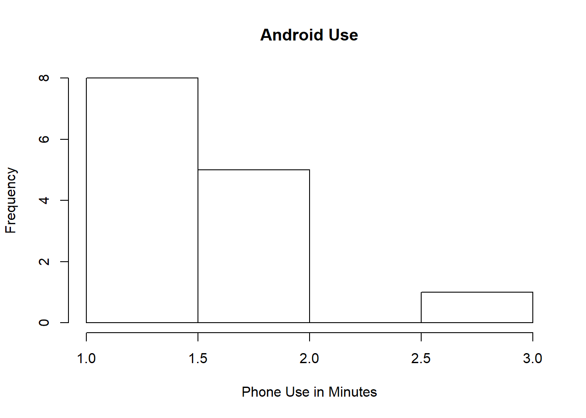
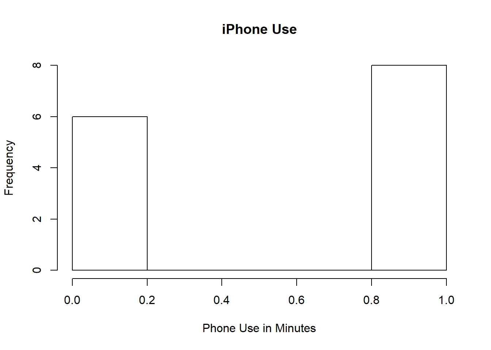
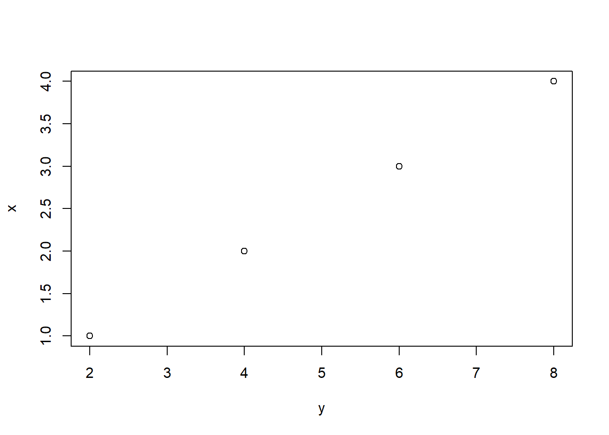
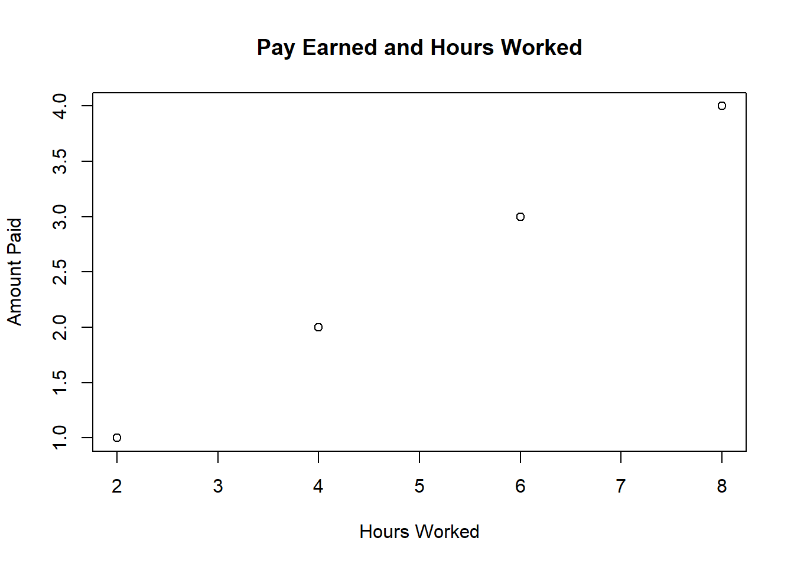
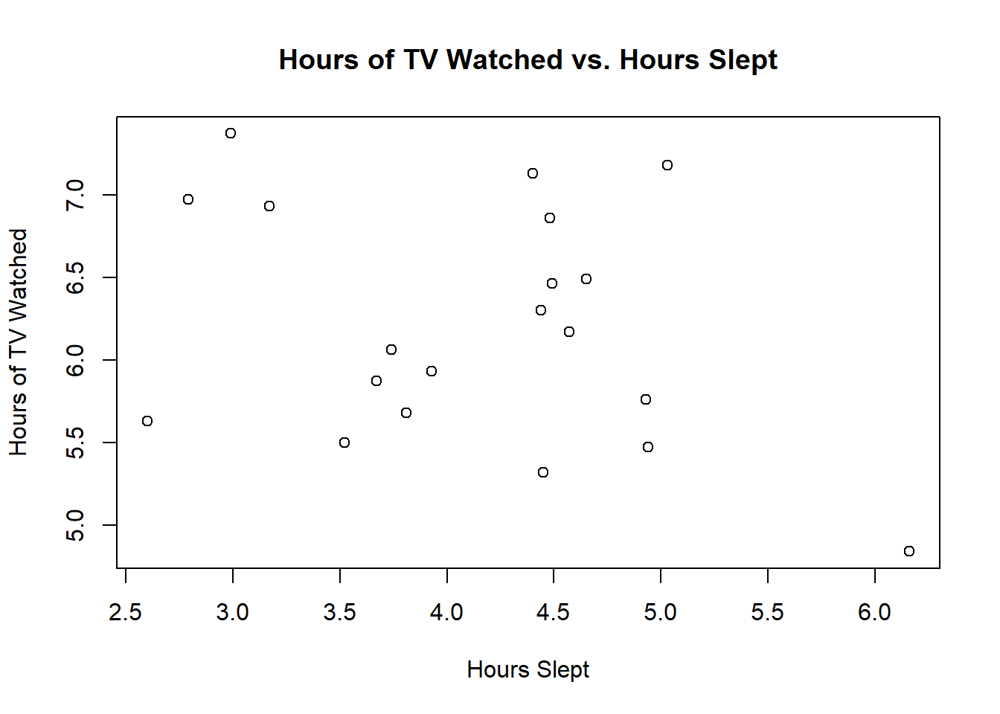
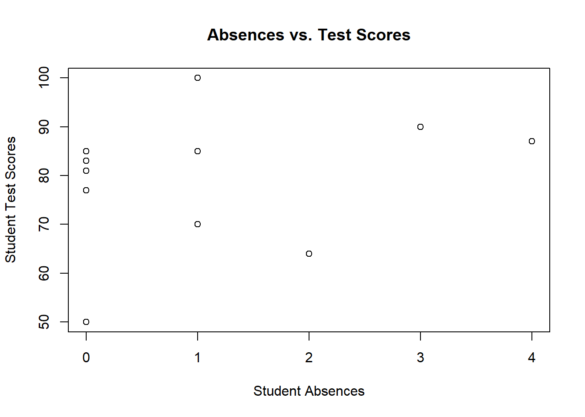

Hello!
Welcome to PSYC 3400: Statistical Methods in Behvioral Research. In this course, we will be using R-Studio in order to visualize and implement what you learn in lecture.
In other statistics classes, students will be learning the same exact materials using a program called SPSS. The main difference between SPSS and R-Studio is usability and price. SPSS is a proprietary product, which means it costs a lot of money. R-Studio on the other hand is freeware–which, as the name suggests is free.
R-Studio, or R as we will refer to it going forwards, is by no means difficult, however, it does require that you learn a new way to think. It can be downloaded here
R can do simple math operations: (Addition, Subtraction, Division, Multiplication, Exponentiation)
2 + 2## [1] 44 - 1## [1] 310 / 2## [1] 53 * 3## [1] 96^2## [1] 36Those same operations can be saved to a variable. Variables will hold that value when they are ‘called’ later.
x = 2 + 2
x## [1] 4y = (2+2)+(10/5)+(2*3)
y## [1] 12We can take a value and assign it to a variable. We can also take two variables and perform math operations on them. When dealing with real data, it is important to assign understandable variable names.
x = 2
y = 2
x + y## [1] 4mean_age = 26In this class, we will often use data sets. Single numbers are important, but most, if not all tests in Psychology make use of a dataset consisting of several numbers. In order to make a dataset in R we have two options.
x = c(1,2,3,4)
x## [1] 1 2 3 4ages = c(20,18,19,21,22,22,18,19,20,20,21)
ages## [1] 20 18 19 21 22 22 18 19 20 20 21x = c(1,3,5,7,9,11)
mean(x)## [1] 6median(x)## [1] 6range(x)## [1] 1 11With the exception of the range, the mean and median tell us something about the data. They tell us that in this case, the mean for x is 6 and the median is rmedian(x). When the median and the mean are the same it leads us to believe this is a fairly symmetrical dataset. In order to test this, we can plot a histogram. A histogram shows us frequency counts for every data point.
x = c(1,3,5,7,9,11)
hist(x)
Between 0-1 there is exactly 1 point, between 2-4 there is exactly 1 point, etc. Let’s see what it looks like when there is some variation in the data.
x = c(1,3,2,5,7,8,6,3,4,4,5,5,5,5,2,1,6,8,10)
hist(x)
In this course, the data that we are dealing with will have different properties assigned to it. Doing this will allow you to attach meaning into your interpretation while also showing you how to not only visualize, but also organize the data. We will be adding two new functions here: main = “” and xlab = “”. The main function tells R what to label the plot, and the xlab function tells R what to label the x-axis.
Consider the following:
Android_Use = c(1,1,1,1,2,2,2,1,1,1,2,3,2,1)
iPhone_Use = c(1,1,1,0,0,0,1,1,1,0,0,0,1,1)
hist(Android_Use, main = "Android Use", xlab = "Phone Use in Minutes")
hist(iPhone_Use, main = "iPhone Use", xlab = "Phone Use in Minutes")
So far we have learned that R allows us to do simple math problems, create datasets, extract some descriptions from the dataset and visualize how the data is distributed.
The next step is to look at data and see if there are any relationships present. Most of the data you collect or are given will have an established relationship. To start, let’s take a look at a dataset that is manufactured to have a somewhat perfect relationship.
x = c(1,2,3,4)
y = c(2,4,6,8)
plot(x~y)
We can clearly see that the distance between each point is the same. Without any idea of what x and y represent all we can say is that it appears that there seems to be a relationship or a pattern.
x = c(1,2,3,4)
y = c(2,4,6,8)
plot(x~y, main = "Pay Earned and Hours Worked", xlab = "Hours Worked", ylab = "Amount Paid")
Realistically, looking at this makes sense but are we to belive that working 4 hours yields a result of $2 pay? The data you look at should have context attached to it. Additionally, most data that you are working with will have more than 4 data points.
So let’s see what a dataset of 20 does to our visualiztion.
Hours_Slept = round(rnorm(20,6.3),digits = 2)
Hours_Watched_TV = round(rnorm(20,4),digits = 2)
plot(Hours_Slept~Hours_Watched_TV, main = "Hours of TV Watched vs. Hours Slept", xlab = "Hours Slept", ylab ="Hours of TV Watched")
The above data creation function is not important for you to know. But I want to make sure that anything I do, you can see so you understand where information is coming from.
From this data set, we wouldn’t really be able to make any discernable, objective interpretation of this plot.
Is there a relationship between hours of TV watched and hours slept? Maybe, but not in the data we collected! This is the important thing to note about this class, and most of science that you will see in your life. Just because you see a chart or a graph, does not mean that it is right or true. I am here to teach you how to use R-Studio to perform statistical calculations, but I am also here to be a proponent for scientific literacy.
Most of the data you will be dealing with in this class will be from a set. The examples in the beginning of class focused mainly on simple operations in R. A “real” dataset may have several variables.
age = c(10,13,13,15,14,13,12,14,13,15,11,12)
test_score = c(50,77,85,90,64,87,90,100,83,85,81,70)
absences = c(0,0,1,3,2,4,3,1,0,0,0,1)
age_experiment<-data.frame(age,test_score,absences)
age_experiment## age test_score absences
## 1 10 50 0
## 2 13 77 0
## 3 13 85 1
## 4 15 90 3
## 5 14 64 2
## 6 13 87 4
## 7 12 90 3
## 8 14 100 1
## 9 13 83 0
## 10 15 85 0
## 11 11 81 0
## 12 12 70 1In this hypothetical, a researcher is interested in whether or not the number of absences a student has, has any effect on the grade that student receives on a test. In order to test this, we should probably make a plot of the different variables. We could simply just type out the vairables, but it is better to “call” them using a $.
plot(age_experiment$test_score~age_experiment$absences, main = "Absences vs. Test Scores", xlab = "Student Absences", ylab = "Student Test Scores")